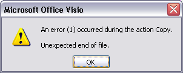
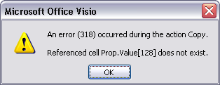
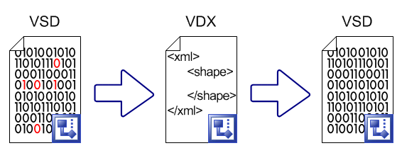
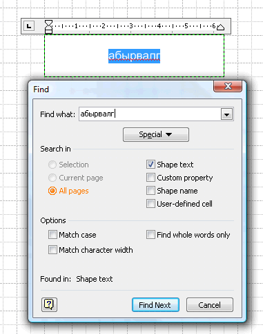

Статья 27. «Информационный катарсис»
Ка́тарсис, ката́рсис (греч. κάθαρσις, «очищение, возвышение») — эстетическая
категория, характеризующая высшую степень реализации эстетического опыта.
Предполагается, что катарсис — это внутреннее потрясение, просветление.
(ru.wikipedia.org)
 Ошибки в программах, это то, с чем приходится сталкиваться пользователю любой программы. Современные программы содержат иногда более сотен тысяч строк кода. А т.к. код пишут программисты, им, как и всем людям, свойственно иногда ошибаться.
Ошибки в программах, это то, с чем приходится сталкиваться пользователю любой программы. Современные программы содержат иногда более сотен тысяч строк кода. А т.к. код пишут программисты, им, как и всем людям, свойственно иногда ошибаться.
Итак, самые распространенные ошибки, встречавшиеся в моей практике, это:
- Ошибка №1 (Error 1). Очень серьезная ошибка, т.к. возникает спонтанно, не дает копировать что-либо и может привести к тому, что данная ошибка появится в файлах, которые открыты в текущей сессии Visio. Ошибка, обычно, появляется при использовании динамического соединителя (dynamic connector), который был скопирован вместе с другими фигурами. Иногда появляется при работе с файлами, которые были созданы в формате Visio 2002. При сохранении, данная ошибка, остается.

- Ошибка №2 (Error 2). Ошибка, которая появляется при использовании фигур стен, колонн, окон. Появляется тоже спонтанно, отследить сложно. И также не позволяет копировать что-либо на чертеже. Иногда блокирует функцию сохранения.
- Ошибка №318 (Error 318). Самая безобидная ошибка, появляется в определенных случаях, когда перемещение данных, из документа (TheDoc) до фигуры (TheSheet), осуществляется через промежуточные ячейки. Лечится простым удалением «пятого колеса», т.е. этих самых промежуточных ячеек на страницах (ThePage).

- Ошибка №2114 (Error 2114). Это «сетевая» ошибка происходит, когда пропадает доступ к источнику файла. Обычно не позволяет произвести сохранение файла в новое место. В настройках включайте Автосохранение, дожидайтесь его, идите в место хранения временных файлов, копируйте его и смело закрывайте сессию Visio. Работа не потеряна.
- Ошибка, возникающая при обновлении связей Excel. В случае использования объектов Excel в чертежах, вы открываете таблицу для редактирования, производите правку, а когда закрываете, то фигура не обновляется. Это происходит потому, что файл таблицы (Excel-файл) произвел автосохранение в другое место. Тут все просто: сохраняйте файл Excel на диск под новым именем и снова вставляйте как объект в Visio.
Теперь, как бороться с ошибками 1 и 2? В предыдущей статье я описывал формат XML, и одно из его преимуществ указывал его текстовый синтаксис. Соответственно, надо открыть файл содержащий ошибку, сохранить его в формате XML-drawing. Затем надо закрыть файл и обязательно закрыть текущую сессию, чтобы выгрузить программу. И, затем, снова открыть XML файл. Программа обработает его за большее время, но в конце вы получите тот же файл. Что касается внедренных объектов, то возможно их придется вставлять заново. Затем сохраняйте его как обычный vsd-файл и работайте дальше. Именно эту незатейливую процедуру я и назвал «Информационный катарсис».

В данной статье я писал о методе скрытия страниц от пользователя, и мне пришло письмо, в котором приводился простой способ снятия данной защиты, а именно – простое сохранение файла в формат Visio 2002, т.к. в данной версии файла отсутствовала данная возможность, скрытый лист будет доступен.
Но сама работа со скрытым листом неудобна в Visio 2003, т.к. приходится постоянно что-то вносить, править, и хочется иметь более простой способ доступа к нему. И он есть. Его придумал Александр Кузин. Способ прост. На листе создается фигура с надписью, которая точно никогда не встретиться (А. Кузин предложил использовать первое слово, произнесенное Шариковым – «абырвалг» (М. Булгаков, «Собачье сердце»)). Затем, когда понадобится доступ к странице, просто вызываете поиск и вводите это слово, не забыв при этом установить диапазон поиска по всем страницам. Программа находит данное слово на скрытой странице, выделяет его и вы на скрытой странице!

Элегантное решение, не правда ли?
Статьи:


В начало раздела
Автор: Ничков Алексей (a.k.a. Digitall)